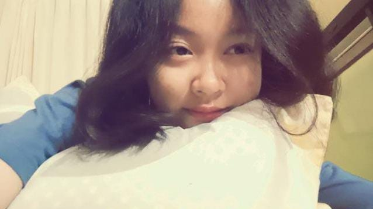

1. Informasi Pribadi & Akademik
| Kategori | Detail Informasi |
|---|---|
| Nama Lengkap | Nazwa Triana Salsabila |
| Tanggal Lahir | |
| Alamat | Kuningan, Jawa Barat |
| NIM | 20250910069 |
| Kelas | SINFC 2025 01 |
| Program Studi | Sistem Informasi |
2. Keterampilan & Keahlian
Berikut adalah tingkat penguasaan keterampilan yang sedang saya pelajari:
-
Microsoft Office
85% -
Desain Grafis
65%
3. Hobi
Klik pada bagian di bawah ini untuk melihat detail hobi:
🎧 Listening to Music
Mendengarkan berbagai genre musik untuk mencari inspirasi dan membantu meredakan stres.
This is my Spotify account you can hear all of my favorit song here: @cacaa
📚 Reading Books
Mengeksplorasi berbagai dunia baru, memperluas wawasan, dan memperkaya kosakata melalui lembaran-lembaran halaman buku, baik fiksi maupun non-fiksi. Membaca adalah cara favorit saya untuk terus belajar dan menginspirasi diri.
4. Profil Keluarga Tercinta
"Hello! Let's Meet With My Family"

Biodata Ayah
| Nama | : Wahdi |
| TTL | : Kuningan, 20 Mei 1968 |
| Pekerjaan | : PNS |
"Bapak, terima kasih sudah selalu mengusahakan apa yang aku mau! Tolong hidup lebih lama lagi, I love you so much!"

Biodata Ibu
| Nama | : Setiasih |
| TTL | : Kuningan, 27 Agustus 1970 |
| Pekerjaan | : Ibu Rumah Tangga |
"I miss you so much Ibu, may heaven wrap you in its warm embrace!"

Biodata Anak Pertama
| Nama | : Nenden Rostika Dewi |
| TTL | : Kuningan, 16 Mei 1994 |
| Pekerjaan | : Ibu Rumah Tangga |
"She's nice and I love her so much!"

Biodata Anak Kedua
| Nama | : Rizal Bahtiar Algifari |
| TTL | : Kuningan, 12 Maret 2000 |
| Pekerjaan | : Pegawai Swasta |
"Terima kasih ndut untuk kasih sayang dan rasa aman!"

Biodata Anak Ketiga (Saya)
| Nama | : Nazwa Triana Salsabila |
| TTL | : Kuningan, 09 April 2007 |
| Pekerjaan | : Mahasiswa |
"Untuk diriku, terima kasih telah hidup hingga sampai saat ini!"
5. Media Sosial & Kontak
- Instagram: @nawzz.z
- WhatsApp: 0896-2849-2322
- TikTok: @pumpkinblueee
- Email: 20250910069@uniku.ac.id
- Spotify: @cacaa